オートマチック トランスアクスルASSY（U340F） 取り付け |
| 1. トルク コンバータASSY取り付け |
| 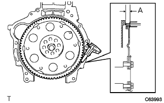 |
ノギスを使用して、トランスアクスル取り付け面とドライブプレートのトルクコンバータ取り付け面との寸法Aを測定する。[*1]
| 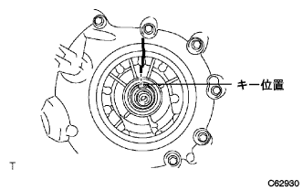 |
フロントオイルポンプドライブギヤのキーを真上に合わせ、ハウジングにマークを付ける。
 |
トルクコンバータの溝の位置が分かるようにマークを付ける。
| 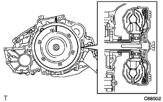 |
ケースとコンバータのマークを合わせ、インプットシャフトのスプラインとタービンランナのスプラインをかん合させる。
| 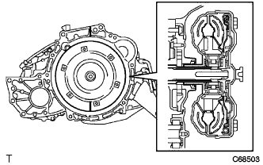 |
コンバータを回転させながら、ステータシャフトのスプラインとステータのスプラインをかん合させる。
| 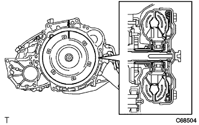 |
コンバータを回転させ、ケースとのマークを合わせオイルポンプドライブギヤのキーとコンバータのキー溝をかん合させる。
| 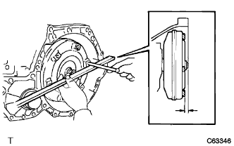 |
セットブロックからハウジング端面までの寸法を測定し、[*1]で測定したA値より大きいことを確認する。
| 2. オートマチック トランスアクスルASSY取り付け |
| 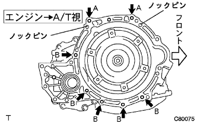 |
エンジン側にノックピンが付いていることを確認する。
エンジンとトランスアクスルASSYを水平にしてノックピンとノックピン穴を合わせ、図の位置のボルト7本を締め付ける。
トルクコンバータセットボルト6本にアドヘシブ1324を塗布する。
| 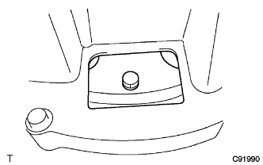 |
トルクコンバータセットボルト6本を締め付ける。
| 3. エンジンマウンティング ブラケット LH取り付け |
| 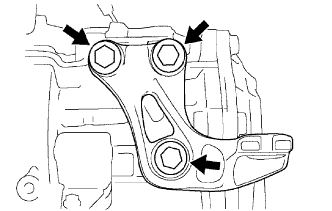 |
ボルト3本で、エンジンマウンティングブラケットLHをオートマチックトランスアクスルに取り付ける。
| 4. トランスミッションオイルフィラ チューブSUB-ASSY取り付け |
| 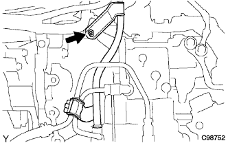 |
新品のOリングにオートフルードタイプT-IVを塗布し、オイルフィラチューブに取り付ける。
ボルトで、オイルフィラチューブをトランスアクスルASSYに取り付ける。
| 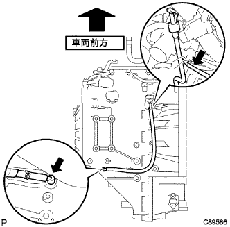 |
ブリーザホースをオイルフィラチューブに取り付ける。
オイルレベルゲージをオイルフィラチューブに取り付ける。
オイルクーラインレットチューブNo.1およびオイルクーラアウトレットチューブNo.1を仮付けする。
| 5. オイルクーラアウトレット チューブ NO.1取り付け |
| 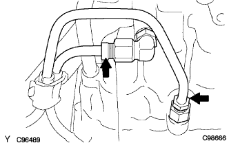 |
スパナ(19mm)を使用してユニオンボルトを固定し、ユニオンナットレンチ17を使用してオイルクーラアウトレットチューブを締め付ける。
| 6. オイルクーラインレット チューブ NO.1取り付け |
スパナ(19mm)を使用してユニオンボルトを固定し、ユニオンナットレンチ17を使用してオイルクーラインレットチューブを締め付ける。
| 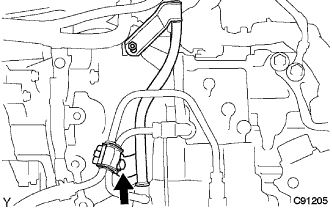 |
ボルトで、オイルクーラチューブクランプをトランスアクスルASSYに取り付ける。
| 7. トランスミッション コントロールケーブル ブラケット NO.1取り付け |
ボルト2本で、トランスミッションコントロールケーブルブラケットNo.1を取り付ける。
| 8. スピードメータ センサ取り付け |
| 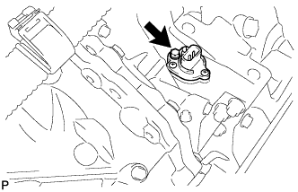 |
新品のOリングにオートフルードタイプT-IVを塗布し、スピードメータセンサに取り付ける。
ボルトでスピードメータセンサおよびスピードメータセンサドリブンギヤを取り付ける。
スピードメータセンサコネクタを接続する。
| 9. エアクリーナ ブラケット取り付け |
| 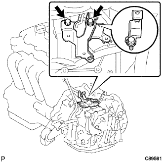 |
ボルト2本で、エアクリーナブラケットおよびブリーザホースクランプをオートマチックトランスアクスルに取り付ける。
| 10. ワイヤハーネス取り付け |
| 11. トランスファASSY取り付け |
トランスファASSYをトランスアクスルASSYに取り付ける。
| 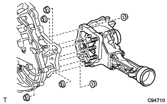 |
ナット6個を取り付ける。
| 12. トランスファスティフナ プレート RH取り付け |
| 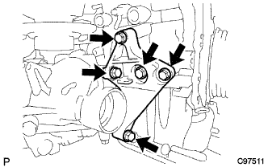 |
ボルト5本で、トランスファスチフナプレートRHを取り付ける。
| 13. トランスファスティフナ プレート CTR取り付け |
| 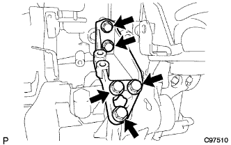 |
ボルト5本で、トランスファスチフナプレートCTRを取り付ける。
| 14. マニホルドサポート ブラケット取り付け |
| 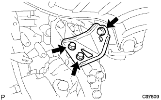 |
ボルト3本で、マニホルドサポートブラケットを取り付ける。
| 15. エンジンマウンティング ブラケット RR取り付け |
| 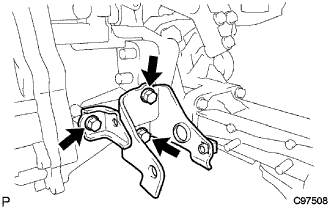 |
ボルト3本で、エンジンマウンティングブラケットRRを取り付ける。
| 16. スタータASSY取り付け |
| 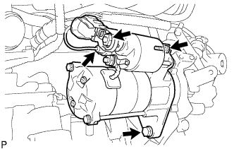 |
ボルト2本でスタータASSYを取り付ける。
コネクターを接続する。
ナットで30端子を取り付ける。
ターミナルキャップを閉じる。
| 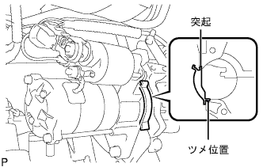 |
フライホイールハウジングサイドカバーの突起をシリンダブロックの奥まで完全に差し込み、突起をシリンダブロックに沿わせるようにして押し当てながらツメをオイルパンにはめ込んでフライホイールハウジングサイドカバーを取り付ける。
| 17. エキゾーストパイプASSY FR取り付け |
ノギスを使用して、コンプレッションスプリングの自由長を測定する。
| 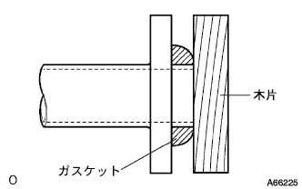 |
新品のガスケットを木片およびハンマーを使用して、エキゾーストマニホルドの面一まで徐々に打ち込む。
ボルト2本で、エキゾーストマニホルドにエキゾーストパイプASSY FRを取り付ける。
| 18. フロントサスペンション クロスメンバSUB-ASSY取り付け |
ボルトで、エンジンマウンティングインシュレータRRとエンジンマウンティングブラケットRRを取り付ける。
ボルト2本をはずし、エンジンハンガ2個を取りはずす。
ボルトで、ラジオセッティングコンデンサを取り付ける。
ボルトで、オキシジエンセンサワイヤリングブラケットを取り付ける。
| 19. パワーステアリング リンクASSY取り付け |
ボルト2本で、パワーステアリングASSY W/ベーンポンプを取り付ける。
| 20. ベーン ポンプASSY取り付け |
| 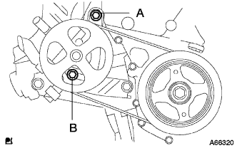 |
ボルト2本でベーンポンプASSYを仮付けする。
コネクターを接続する。
ベーンポンプVベルトを取り付ける。
Vベルトの張力を調整し、調整用ボルトBを締付ける。
固定用ボルトAを締付ける。
| 21. コネクター接続 |
| 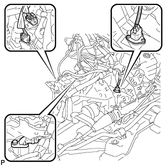 |
スピードメータセンサーコネクター、トランスミッションワイヤコネクター、ニュートラルスタートスイッチコネクターおよびレボリューションセンサコネクターを接続する。
| 22. エンジンASSY W/トランスアクスル取り付け |
| 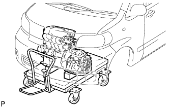 |
エンジンASSY W/トランスアクスルおよびフロントサスペンションクロスメンバをエンジンリフタにセットする。
 |
ボルト4本で、エンジンASSY W/トランスアクスルおよびフロントサスペンションクロスメンバを仮組み付けする。
| 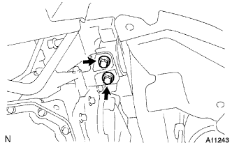 |
ボルト2本で、エンジンマウンティングインシュレータLHを取り付ける。
| 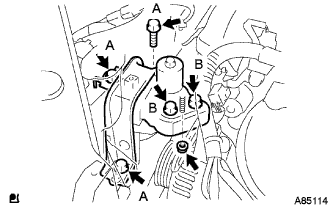 |
ボルト5本およびナットで、エンジンインシュレータRHを取り付ける。
| 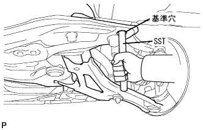 |
SSTをサスペンションクロスメンバRH側および車両RH側の基準穴に差し込む。
| 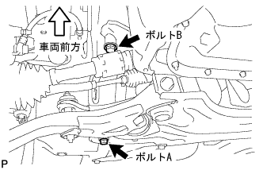 |
ボルトA、Bの順序で仮締めする。
SSTをサスペンションクロスメンバRH側および車両RH側の基準穴に差し込み、規定トルクで締め付ける。
| 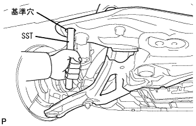 |
SSTをサスペンションクロスメンバLH側および車両LH側の基準穴に差し込む。
| 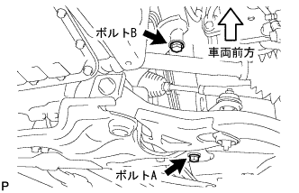 |
ボルトA、Bの順序で仮締めする。
SSTをサスペンションクロスメンバLH側および車両LH側の基準穴に差し込み、規定トルクで締め付ける。
| 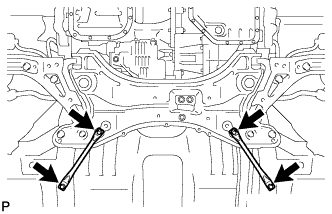 |
ボルト4本で、フロントサスペンションメンバリインホースメントLHおよびRHを取り付ける。
| 23. フロントドライブ シャフトASSY LH取り付け |
インボードジョイントASSY LHのスプライン部にオートフルードタイプT-IVを塗布する。
| 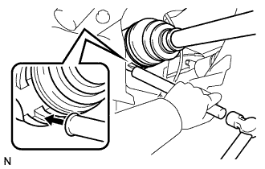 |
インボードジョイントASSY LHのスプラインをかん合させ、ブラスバーおよびハンマーを使用して、フロントドライブシャフトASSY LHを挿入する。
| 24. フロントドライブ シャフトASSY RH取り付け |
インボードジョイントASSY RHのスプライン部にオートフルードタイプT-IVを塗布する。
シャフトのスプラインを合わせ、ドライブシャフトASSY RHを確実に挿入する。
| 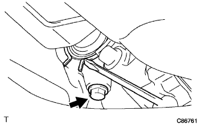 |
角軸マイナスドライバーを使用して、ドライブシャフトベアリングブラケットホールスナップリングをベアリングブラケットに取り付け、新品のベアリングブラケットボルトNo.1を取り付ける。
| 25. フロントアクスルASSY LH取り付け |
| 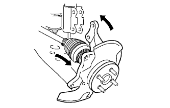 |
フロントアクスルASSY LHを車両外側に押して、フロントアクスルASSY LHにフロントドライブシャフトASSY LHのスプラインをかん合させ、挿入する。
| 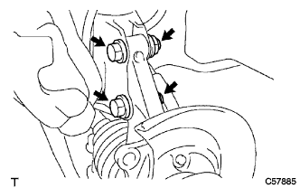 |
フロントアクスルASSYをショックアブソーバに取り付け、車両前方からボルト２本を挿入し、ナット２個を締め付ける。
| 26. フロントアクスルASSY RH取り付け |
| 27. タイロッド エンドSUB-ASSY LH取り付け |
タイロッドエンドLHをステアリングナックルに取り付け、キャッスルナットで締め付ける。
新品のコッターピンを取り付ける。
| 28. タイロッド エンドSUB-ASSY RH取り付け |
| 29. フロントサスペンションロワーアームNo.1 LH取り付け |
ロワーアームASSYのステアリングナックルに取り付け、キャッスルナットで締め付ける。
新品のクリップを取り付ける。
| 30. フロントサスペンションロワーアームNo.1 RH取り付け |
| 31. スタビライザ バー FR取り付け |
車両右側からフロントスタビライザバーを挿入する。
| 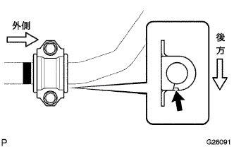 |
左右のフロントスタビライザバーブシュNo.1をスタビライザバーの識別マークの外側に取り付ける。
ボルト4本で、フロントスタビライザブラケットNo.1 LHおよびRHを介して、フロントスタビライザバーをフロントサスペンションクロスメンバに取り付ける。
| 32. スピード センサ FR LH取り付け |
| 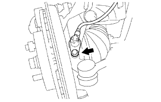 |
ボルトで、スピードセンサFR LHをステアリングナックルに取り付ける。
| 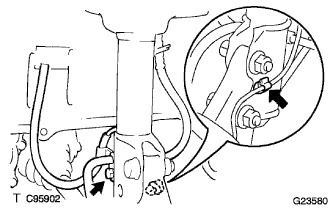 |
スピードセンサFR LHのクランプおよびフレキシブルホースをフロントショックアブソーバASSY LHに取り付ける。
| 33. スピード センサ FR RH取り付け |
| 34. フロントアクスル シャフト ナット LH取り付け |
ソケットレンチ(30mm)を使用して、新品のフロントアクスルハブナットLHを取り付ける。
| 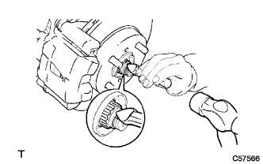 |
タガネおよびハンマーを使用して、フロントアクスルハブナットLHをかしめる。
| 35. フロントアクスル シャフト ナット RH取り付け |
| 36. エキゾースト パイプASSY CTR取り付け |
新品のガスケットを介して、エキゾーストパイプASSY FRにエキゾーストセンタパイプASSYを差し込む。
エキゾーストパイプサポート2個でエキゾーストセンタパイプASSYを取り付ける。
| 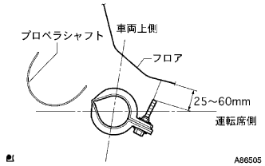 |
新品のクランプおよびボルトでクランプを図の位置にし、ボルトを締め付ける。
| 37. プロペラシャフトASSY取り付け |
エクステンションハウジングからSSTを取りはずす。
エクステンションハウジングにプロペラシャフトASSYを挿入する。
| 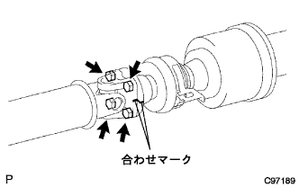 |
プロペラシャフトASSYおよびインタミディエイトシャフトASSYの合わせマークを合わせる。
ボルト4本、ワッシャおよびナット各4個で、プロペラシャフトASSYを取り付ける。
| 38. ステアリングスライディング ヨークSUB-ASSY接続 |
| 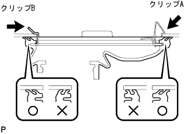 |
クリップBを付け、ホールカバーおよびクリップAをボデーに取り付ける。
| 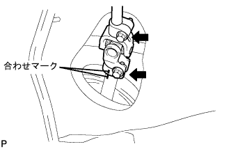 |
合わせマークを合わせて、ボルトでスライディングヨークを取り付ける。
| 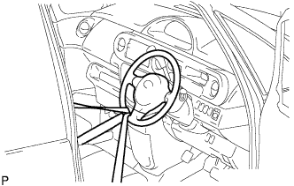 |
ステアリングホイール回転防止用シートベルトを取りはずす。
| 39. ステアリングコラムホールカバー プレート取り付け |
| 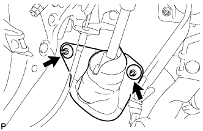 |
クリップ2個でホールカバープレートを取り付ける。
| 40. クーラコンプレッサ W/マグネットクラッチASSY取り付け |
ボルト4本で、コンプレッサASSYを取り付ける。
コネクターを接続する。
| 41. ファン ＆ オルタネータ Vベルト取り付け |
| 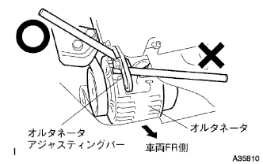 |
ファン & オルタネータVベルトを取り付ける。
ハブナットレンチまたはバーなどを使用して、オルタネータを車両フロント側に押して、ファン & オルタネータVベルトの張力を調整する。
 |
調整用ボルトAを締め付けてから、固定用ボルトBを締め付ける。
| 42. Vリブドベルト点検 |
| 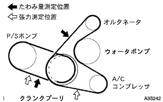 |
張力およびたわみ量点検
| 新品取り付け時 [mm] | 点検時 [mm] | |
|---|---|---|
| オルタネータベルト | 7-8.5 | 11-13 |
| P/Sベルト | 8-10 | 11-13 |
| 新品取り付け時 [N{kgf}] | 点検時 [N{kgf}] | |
|---|---|---|
| オルタネータベルト | 539-637 {55-65} | 245-392 {25-40} |
| P/Sベルト | 441-539 {45-55} | 245-343 {25-35} |
| 43. エンジンワイヤ取り付け |
| 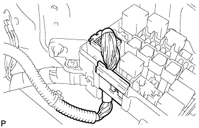 |
エンジンワイヤをエンジンコントロールコンピュータおよびジャンクションブロックに接続する。
エンジンルームジャンクションブロックにコネクターおよびクランプをワイヤハーネスを接続する。
ボルトで、エンジンルームワイヤハーネスのアースワイヤを取り付ける。
グラブボックスを取り付ける。
| 44. フューエル チューブSUB-ASSY接続 |
フューエルチューブコネクターの軸とパイプの軸を合わせてリテーナが“カチッ”と音がするまでフューエルチューブコネクターを挿入し、フューエルチューブを接続する。
フューエルパイプクランプNo. 1を取り付ける。
| 45. ヒータウォータ ホース インレット A接続 |
クランプを取り付け、ヒータウォータインレットホースAを接続する。
| 46. ヒータウォータ ホース アウトレット A接続 |
クランプを取り付け、ヒータウォータアウトレットホースAを接続する。
| 47. ユニオン トゥー チェックバルブ ホース接続 |
ユニオン ツウ チェックバルブホースを接続する。
| 48. コラムシフト トランスミッション コントロールケーブルASSY取り付け |
ナットで、コントロールケーブルをコントロールシャフトレバーに仮付けする。
新品のクリップで、コントロールケーブルをブラケットに固定する。
| 49. アクセルレータ コントロールケーブルASSY取り付け |
アクセルレータコントロールケーブルASSYをスロットルボデーASSYに取り付ける。
| 50. シリンダヘッド カバー NO.2取り付け |
ナットA2個を締め付け後、ナットB2個でシリンダヘッドカバーNo.2を取り付ける。
| 51. ラジエータASSY取り付け |
車両にラジエータASSYを取り付け、クーリングファンモータのコネクターおよびワイヤハーネスクランプを接続する。
| 52. ラジエータ サポートSUB-ASSY UPR取り付け |
ボルト4本で、ラジエータサポートUPRを取り付ける。
ホーンASSYのコネクターおよびクランプを接続する。
| 53. フードロックサポート ブレース取り付け |
ボルト4本で、ボンネット(フード)ロックサポートブレースを取り付ける。
| 54. フードロック サポートSUB-ASSY取り付け |
ボルト4本およびクリップ1個で、ボンネット(フード)ロックサポートを取り付ける。
| 55. フード ロックASSY取り付け |
ボンネットロックASSYにボンネットロックコントロールケーブルASSYを接続する。
ボルト3本で、ボンネットロックASSYを仮付けする。
| 56. ラジエータ グリル W/ラジエータ サポート シール UPR取り付け |
ラジエータ グリルとラジエータ サポート シール UPRを組み付ける。
ラジエータグリル下部のツメを合わせ、クリップ6個でラジエータ グリル W/ラジエータ サポート シール UPRを取り付ける。
| 57. オイルクーラインレット ホース取り付け |
オイルクーラインレットホースを接続し、クランプを取り付ける。
| 58. オイルクーラアウトレット ホース取り付け |
オイルクーラアウトレットホースを接続し、クランプを取り付ける。
| 59. ラジエータ インレット ホース取り付け |
ラジエータインレットホースを接続し、クランプを取り付ける。
| 60. ラジエータ アウトレットホース取り付け |
ラジエータアウトレットホースを接続し、クランプを取り付ける。
| 61. エア クリーナASSY取り付け |
ボルト4本で、エアクリーナケース W/エアクリーナインレットNo.1およびNo.2を取り付ける。
エアクリーナフィルタエレメントを取り付ける。
エアクリーナキャップ W/エアクリーナホースNo.1を取り付ける。
コネクターおよびクランプを接続する。
| 62. バッテリ取り付け |
バッテリトレイを取り付ける。
バッテリを取り付ける。
ボルトおよびナットでバッテリクランプおよびアクセルレータケーブルステーを取り付ける。
| 63. フロントタイヤ取り付け |
| 64. オートマチツクトランスアクスルフルード補充 |
| 65. エンジンオイル補充 |
| 66. 冷却液(トヨタ純正スーパーLLC)補充 |
ラジエータドレーンコツクプラグを閉じて、冷却水をラジエータ注入口よりあふれるまで注入する。[*1]
ラジエータキャップを締める。
ラジエータリザーブタンクに冷却液を上限まで注入する。
エンジンをサーモスタットが開弁するまで暖機する。
エンジンを止め、冷却液が冷えるまで待ち、ラジエータキャップをはずして水位を確認する。
水位が下がっている場合は、[*1]より繰り返す。
水位が下がらなくなったら、ラジエータリザーバタンクの冷却液を調整する。
| 67. オイル漏れ点検 |
| 68. 燃料漏れ点検 |
燃圧のかかった状態で燃料系統に漏れがないことを確認する。
| 69. 冷却液(トヨタ純正スーパーLLC)漏れ点検 |
冷却液を満水にしてテスターを取り付ける。
137kPa{1.4kgf/cm2}の圧力をかけ、各部に水漏れがないことを確認する。
| 70. シフトレバー位置点検 |
シフトレバーをNレンジから各レンジにシフトする。このときシフトレバーが円滑に操作でき、各レンジに節度よく動き、ポジションインジケータが表示しシフトレバー位置が一致していることを確認する。
シフトレバーを手前に引いたときのみP、R、Lの各レンジにシフトできることを確認する。
エンジンを始動し、Dレンジにシフトしたとき車両が前進し、Rレンジにシフトしたときブザー音がして車両が後退することを確認する。
| 71. シフトレバー位置調整 |
コントロールシャフトレバーのナットをはずし、コントロールケーブルを切り離す。
コントロールシャフトレバーを反時計方向へ止まるまで回し、そこから2段階戻した位置(Nレンジ)にする。
図のように、シフトレバーをNレンジにシフトし、Rレンジ側に押し付けた状態で、コントロールケーブルを取り付け、ナットで締付ける。
調整後、操作具合および作動を点検する。
| 72. オートマチックトランスアクスルフルード量点検 |
パーキングブレーキを作用させる。
ブレーキペダルを踏み、エンジンを始動する。
アイドル回転状態でシフトレバーをPからLまでの各レンジにゆっくりシフトした後、Pレンジに戻す。
アイドル回転状態でレベルゲージを抜き、ウエスなどでオイルを拭き取り、再度挿入してオイルがレベルゲージの[HOT]の範囲にあることを確認する。
オイル量の少ないときは、オイル漏れを点検する。
| 73. エンジンアンダ カバー LH取り付け |
スクリュー2個およびボルト2本で、エンジンアンダカバーLHを取り付ける。
| 74. エンジンアンダ カバー RH取り付け |
スクリュー2個およびボルト2本で、エンジンアンダカバーRHを取り付ける。
ナットを、締め付ける。
| 75. 点火時期点検 |
TaSCANによる点検
エンジンを暖機する。
DLC3にTaSCANを接続する。
画面表示に従って操作し、[ECUデータモニター]画面を表示させる。
点火時期が基準値内であることを確認する。
エンジン回転を上げたとき、点火時期がすみやかに進角することを確認する。
[アクティブテスト]画面を表示させ、点火時期＃1を選択後、TC端子ON状態で測定する。
一般計器による点検
エンジンを暖機する。
シリンダヘッドカバーNo.2を取りはずす。
 |
図の位置のワイヤハーネスを引きだし、タイミングライトのクリップをワイヤハーネスに接続する。
ダイアグノーシスチェックワイヤNo.2を使用して、DLC3の13(TC)←→4(CG)端子間を短絡する。
点火時期が基準値内であることを確認する。
DLC3の13(TC)←→4(CG)端子間を開放する。
点火時期が基準値内であることを確認する。
エンジン回転数を上げたとき、点火時期がすみやかに進角することを確認する。
| 76. エンジンアイドル回転点検 |
TaSCANによる点検
エンジンを暖機する。
DLC3にTaSCANを接続する。
画面指示に従って操作を行い、[点火時期点検]画面を表示させ、アイドル回転数を測定する。
一次電流検出タイプの回転計による点検
DLC3の9(TAC)端子にタコパルスピックワイヤNo.2を取り付け、回転計を接続しアイドル回転数を測定する。
| 77. CO，HC濃度点検 |
エンジンを始動する。
2500r/minで180秒間レーシングする。
アイドル回転時にテスタプローブを40cm以上テールパイプに挿入する。
CO、HC濃度の点検を行う。
CO、HCが基準値外の場合は、下に示した手順で行う。
オキシジエンセンサ点検
下の表を参考にトラブルシューティングを行う。
| CO | HC | 不具合 | 推定原因 |
|---|---|---|---|
| 正常 | 高い | ラフアイドル |
|
| 低い | 高い | ラフアイドル（HC不安定） |
|
| 高い | 高い | ラフアイドル（黒煙） |
|
| 78. タイヤ点検 |
参照| 79. 車高点検 |
車両のコーナーを大きく上下に動かし、サスペンションを落ち着かせてから車高を点検する。
| タイヤサイズ | A寸法-B寸法 [mm] | D寸法-C寸法 [mm] |
|---|---|---|
| 175/70R14 | 92 | 39 |
| 80. サイドスリップ点検 |
サイドスリップテスターでサイドスリップを点検する。
基準値外の場合はホイールアライメントを点検する。
| 81. トーイン点検 |
車両をゆすり、車両を安定させる。
車両を直進で5ｍ手押しして前進させる。
トーインゲージの指針高さをフロントホイール軸中心高さに合わせ、タイヤの後ろ側に入れる。
前輪タイヤ各々の後部にトレッドセンターをしるし、マーク間の距離(B寸法)を測定する。
車両をゆっくり押して前進させ、前輪を180°回転させる。
車両前部でマーク間の距離(A寸法)を測定する。
トーインを求める。
| 82. トーイン調整 |
左右のラックエンドのねじ部の長さを測定する。
ラックブーツのクリップをはずす。
タイロッドエンドのロックナットをゆるめる。
ラックエンドねじ部の左右差が基準外の場合は調整を行う。
トーインの測定値がアウト側にはずれる場合は、寸法の短い方のラックエンドを伸ばす方向に調整する。
トーインの測定値がイン側にはずれる場合は、寸法の長い方のラックエンドを縮める方向に調整する。
再度トーインを点検する。
左右のラックエンドを各々の反対方向に同量ずつ回し、トーインが基準値内に入るように調整する。
タイロッドエンドのロックナットを締め付ける。
プライヤーを使用して、クリップを図の範囲に取り付ける。
| 83. ホイール切れ角点検 |
ターニングラジアスゲージをセットする。
ホイールの切れ角を点検する。
| 内側(点検範囲) | 外側(参考) |
|---|---|
| 39°±2° | 34° |
| 84. キャンバー、キャスター、キングピンアングル点検 |
ホイールキャップまたはセンターオーナメントを取りはずす。
車両を平坦な場所でリフトアップする。
タイヤクランプコンペンセータ(TCK-01)を取り付ける。
タイヤクランプコンペンセータのクランプダイヤルを回し、タイヤクランプアームを広げる。
ダイヤルを回し、下側ツメ2箇所をホイールサイズに合わせホイールリム下部に当て上側ツメをホイールリムに合わせて縮める。
クランプダイヤルを回し、タイヤクランプアームを縮めタイヤに取り付ける。
脱落防止ワイヤーをホイールのエアーバルブに取り付ける。
タイヤクランプコンペンセータを補正する。
タイヤクランプコンペンセータの補正ダイヤルを回してメカゼロライン(赤ライン)の範囲内に合わせる。
キャンバーキャスターキングピンゲージをタイヤクランプコンペンセータの取り付けプレートに取り付け、合わせマークを合わせる。
ホイールを少し回転させ、キャンバーキャスターキングピンゲージの水平気泡が中心になるように合わせ、キャンバーキャスターキングピンゲージの調整ネジでキャスター気泡を0°に合わせる。
ホイールを180°回転させ、キャンバーキャスターキングピンゲージとタイヤクランプコンペンセータの合わせマークを合わせ、水平気泡を合わせる。(*1)
上記状態のキャスター気泡を読み取り、その値の1/2の目盛りになるようにタイヤクランプコンペンセータの補正ダイヤルを回し合わせる。(*2)
前記(*1)、(*2)の手順を繰り返し、キャスター気泡の目盛り位置がホイールを180°正、反転させても、一定の数値目盛りを指示すればキャンバーキャスターキングピンゲージのセットは完了。
ターニングラジアスゲージをセットし、車両を降ろす。
キャンバー、キャスターおよびキングピンアングルを点検する。
| キャンバー | キャスター | キングピンアングル |
|---|---|---|
| -0°40'±45' | 2°00'±45' | 10°15'±45' |
キャンバーキャスターキングピンゲージおよびタイヤクランプコンペンセータを取りはずす。
ホイールキャップまたはセンターオーナメントを取り付ける。
| 85. キャンバー調整 |
車両をジャッキアップして、フロントタイヤを取りはずす。
ボルトをはずし、スピードセンサおよびフレキシブルホースを切り離す。
ショックアブソーバロワー側の取り付けナット2個を緩める。
ショックアブソーバのロワー側を動かして、ボルトとステアリングナックルのボルト穴のガタでキャンバーを調整する。
ナット2個を締め付ける。
ボルトで、フレキシブルホースおよびスピードセンサを取り付ける。
フロントタイヤを取り付ける。
車両をジャッキダウンして数回上下にゆすり、サスペンションを落ち着かせる。
キャンバーを点検する。
基準値内の場合は、トーイン点検を行う。
基準値外の場合は、ジャッキアップしてフロントタイヤをはずし、スピードセンサおよびフレキシブルホースを切り離し以下の作業を行う。
 |
ショックアブソーバロワー側の取り付けナット2個およびボルト2本を取りはずす。
アジャスティングボルト2本を選択して、車両前方から挿入する。
| アジャスティングボルト | 品番 | ボルト径 (mm) | 調整量 |
|---|---|---|---|
| A | 90105-14146 | 13 | ±15’ |
| B | 90105-14147 | 12 | ±30’ |
| キャンバー調整量 | セットボルト | 90105-14146 | 90105-14147 |
|---|---|---|---|
| -1°00'--45' | 1、2 | ||
| -45'--30' | 1 | 2 | |
| -30'--15' | 1 | 2 | |
| -15'-0' | 1 | 2 | |
| 0'-15' | 1 | 2 | |
| 15'-30' | 1 | 2 | |
| 30'-45' | 1 | 2 | |
| 45'-1°00' | 1、2 |
ナット2個を取り付ける。
ボルトで、フレキシブルホースおよびスピードセンサを取り付ける。
フロントタイヤを取り付ける。
車両をジャッキダウンして数回上下にゆすり、フロントサスペンションを落ち着かせる。
キャンバーを再度点検する。
トーインを点検する。
サイドスリップを点検する。
| 86. TaSCAN-AT学習値初期化 |
シフト位置がPレンジにあることを確認し、SST(TaSCAN)をDLC3に接続して、IGスイッチおよびSST(TaSCAN)電源をONにする
AT学習値初期化実施
SST(TaSCAN)の画面表示に従い、メインメニュー[作業サポート]→作業サポート区分[トランスミッション]→[AT/CVT学習値初期化]を選択、実行し、AT学習値の初期化を行う。
| 87. テストモード点検(スピードセンサ系統) |
参照| 88. バッテリターミナル脱着時の初期化 |
参照